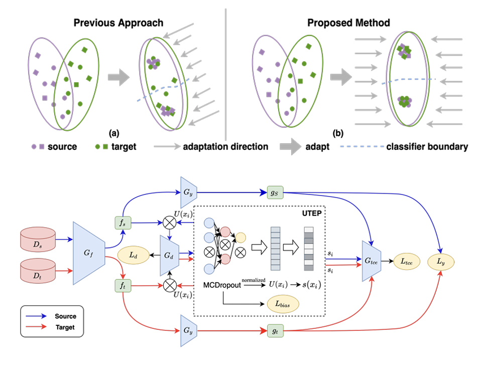

|
I am currently a final year PhD student within the Computer Vision Group in the School of Electronic Engineering and Computer Science at Queen Mary, University of London, supervised by Prof. Shaogang Gong. Before joining the Computer Vision Group in QMUL, I was in Shanghai Jiao Tong University , supervised by Prof. Hongya Tuo and working closely with Prof. Junchi Yan. Currently, my research focuses on deep learning and computer vision, with particular emphasis on test-time training and adaptation of Multi-modal Large Language Models (MLLMs) and their applications. Email / Google Scholar / Website / Github |
{kind=link}
ResearchI am interested in machine learning and computer vision. My current focus is on improving MLLMs' performance in real-world scenarios with limited supervision through test-time training and adaptation. |
News
|
Publications
|
INT: Instance-Specific Negative Mining for Task-Generic Promptable Segmentation
Jian Hu, Zixu Cheng, Shaogang Gong IJCAI, 2025 arXiv To adaptively reduce the influence of irrelevant (negative) prior knowledge whilst to increase the use the most plausible prior knowledge, selected by negative mining with higher contrast, in order to optimise instance-specific prompts generation. |
Class-Aware Diversified Augmentation for Open-Set Single Domain Generalization
Jian Hu, Shaogang Gong, Weitong Cai, Junchi Yan IEEE Transactions on Multimedia, 2025 Paper Explore Single domain open-set generalization with class-aware augmentation. |
|
Leveraging Hallucinations to Reduce Manual Prompt Dependency in Promptable Segmentation
Jian Hu, Jiayi Lin, Junchi Yan, Shaogang Gong NeurIPS, 2024 arXiv / website / code / bibtex Using hallucinations as prior knowledge to help create specific prompts for segmenting tasks, reducing the need for manual prompts. |
|

|
Relax Image-Specific Prompt Requirement in SAM: A Single Generic Prompt for Segmenting Camouflaged Objects
Jian Hu*, Jiayi Lin*, Weitong Cai, Shaogang Gong AAAI, 2024 arXiv / website / code / bibtex Eliminate the need for manual prompts for SAM in various challenging segmentation tasks. |
|
Uncertainty-based Heterogeneous Privileged Knowledge Distillation for Recommendation System
Ang Li*, Jian Hu*, Ke Ding, Xiaolu Zhang, Jun Zhou, Yong He SIGIR, 2023 arXiv / bibtex Proposing a novel algorithm to address heterogeneous knowledge distillation-based transfer learning in industrial recommendation systems. |
|
|
Global-Aware Model-Free Self-distillation for Recommendation System
Ang Li*, Jian Hu*, Lu Wei, Ke Ding, Xiaolu Zhang, Jun Zhou, Yong He DASFAA, 2023 paper / bibtex Introducing a novel algorithm called Global-aware Model-free Self-Distillation to address label noise in training data in Alipay advertising system. |
|
|  |
Learning Unbiased Transferability for Domain Adaptation by Uncertainty Modeling
Jian Hu*, Haowen Zhong*, Fei Yang, Shaogang Gong, Guile Wu, Junchi Yan ECCV, 2022 arXiv / code / bibtex Delving into the transferability estimation problem in domain adaptation and propose a non-intrusive Unbiased Transferability Estimation Plug-in (UTEP) by modeling the uncertainty of a discriminator in adversarial-based DA methods to optimize unbiased transfer. |
|
Domain adaptive YOLO for one-stage cross-domain detection
Ang Li*, Jian Hu*, Chilin Fu, Xiaolu Zhang, Jun Zhou ICASSP, 2022 Paper / bibtex A novel Attribute-Conditioned Face Swapping Network (AFSNet) to preserve attributes and handle low resolution images. |
|

|
Attribute-Conditioned Face Swapping Network for Low-Resolution Images
Shizhao Zhang, Hongya Tuo, Zhongliang Jing, Jian Hu ACML, 2021 arXiv / bibtex Improving cross-domain performance for one-stage detectors, image level features alignment is used to strictly match for local features, and loosely match for global features. |
|
Discriminative Partial Domain Adversarial Network
Jian Hu, Hongya Tuo, Chao Wang, Lingfeng Qiao, Haowen Zhong, Junchi Yan, Zhongliang Jing, Henry Leung ECCV, 2020 arXiv / bibtex Addressing partial domain adaptation problem with discriminative partial domain adversarial network with theoretical analysis. |
Unsupervised satellite image classification based on partial transfer learning
Jian Hu, Hongya Tuo, Chao Wang, Haowen Zhong, Pan Han, Lingfeng Qiao, Zhongliang Jing Aerospace Systems, 2019 arXiv / bibtex Focusing on how to achieve high accuracy on unsupervised satellite image classification. |
|
Multi-Weight Partial Domain Adaptation
Jian Hu, Hongya Tuo, Chao Wang, Lingfeng Qiao, Haowen Zhong, Zhongliang Jing BMVC, 2019 (spotlight) arXiv / bibtex Focusing on how to transfer knowledge from massive labelled dataset to unlabelled miniature one. |
Preprint |
|
ViSMaP: Unsupervised Hour-long Video Summarisation by Meta-Prompting
Jian Hu, Dimitrios Korkinof, Shaogang Gong, Mariano Beguerisse-Diaz Under review arXiv A system to summarise hour long videos with no-supervision. |
|

|
CoS: Chain-of-Shot Prompting for Long Video Understanding
Jian Hu, Zixu Cheng, Chenyang Si, Wei Li, Shaogang Gong Under review arXiv / website / code To frame shot selection as test-time visual prompt optimisation. |
|
V-STaR: Benchmarking Video-LLMs on Video Spatio-Temporal Reasoning
Zixu Cheng, Jian Hu(Corresponding), Ziquan Liu, Chenyang Si, Wei Li, Shaogang Gong Under review arXiv / website / code To decompose video understanding into a Reverse Spatio-Temporal Reasoning (RSTR) task that simultaneously evaluates what objects are present, when events occur, and where they are located while capturing the underlying Chain-of-thought (CoT) logic. |
Service |
 |
Reviewer for CVPR, ICCV, ECCV, TPAMI, IJCV, ICML, ICLR, NeurlPS (top reviewer'24), AAAI, TMLR, ACMMM (outstanding reviewer'24), PKDD, AISTATS, ToMM |
|
Student Demonstrator, ECS795P Deep Learning and Computer Vision 2022-24
Student Demonstrator, ECS607U Data Mining 2023-24 |
|
Special thank you to the source code. |